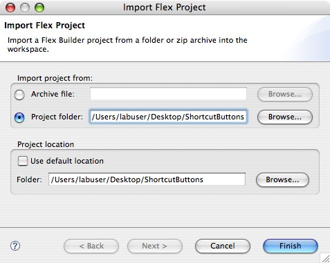

Shortcut Buttons Panel: ActionScript
The third part of the Shortcut Buttons Panel is programming the Adobe Photoshop Panel using ActionScript. The developer will program in ActionScript to call the functions in the JavaScript file created earlier and also instantiate a timer for each check box control component. The timer will be used to automate the creation of a new document or to close a document in Adobe Photoshop. The developer will also learn how to create unique identifiers for the control components currently placed in the design area. After programming in ActionScript, the developer will copy the Adobe Flex Builder produced SWF file to the Adobe Photoshop Panels folder. The result is enabling and using the Shortcut Buttons Panel in Adobe Photoshop.
Instructions:
- Complete Placing and Using the CSXS Library.
- Open Adobe Flex Builder.
- If the ShortcutButtons project fails to show up:
- Go to File > Import > Flex Project....
- Select Project and Browse... to the ShortcutButtons folder on the desktop.
- Deselect Use default location.
- Press Finish. 
- Verify that CSXSLibrary.swc is under the libs folder. Double-click on ColorPicker.mxml if the Design Area is empty.
- Go to Source Mode by selecting Source Mode by selecting Source under the ShortcutButtons.mxml tab or go to Window > Switch Source/Design Mode. The initial code should look similar to the following:
<?xml version="1.0" encoding="utf-8"?> <mx:Application xmlns:mx="http://www.adobe.com/2006/mxml" layout="absolute"> <mx:Button x="10" y="10" label="New Document"/> <mx:Button x="10" y="40" label="Close Document"/> <mx:CheckBox x="135" y="10" label="Activate every 10 seconds"/> <mx:CheckBox x="135" y="40" label="Activate every 12 seconds"/> </mx:Application>
- The red colored text are the changes made to ShortcutButtons.mxml:
<?xml version="1.0" encoding="utf-8"?> <mx:Application xmlns:mx="http://www.adobe.com/2006/mxml" layout="absolute"> <mx:Script> <![CDATA[ import com.adobe.csxs.core.CSXSInterface; public function callAddDocument():void{ CSXSInterface.instance.evalScript("addDocument"); } public function callCloseDocument():void{ CSXSInterface.instance.evalScript("closeDocument"); } ]]> </mx:Script> <mx:Button x="10" y="10" label="New Document" click="callAddDocument();"/> <mx:Button x="10" y="40" label="Close Document" click="callCloseDocument();"/> <mx:CheckBox x="135" y="10" label="Activate every 10 seconds" id="actNewDoc"/> <mx:CheckBox x="135" y="40" label="Activate every 12 seconds" id="actCloseDoc"/> </mx:Application>
Code Walkthrough: Importing
CSXSInterfacefromCSXSLibrary.swcallows communication from the Shortcut Buttons Panel to the Shortcut Buttons JavaScript file. There are two functions inside themx:Scripttag calledcallAddDocumentandcallCloseDocumentthat usesCSXSInterfaceto call theaddDocumentandcloseDocumentfunctions respectively in ShortcutButtons.jsx. The twomx:Buttontags has a parameter calledclickwhich handles the mouse click event on the button. The button labeled New Document calls thecallAddDocument();when the mouse is clicked while the button labeled Close Document calls thecallCloseDocument();when the mouse is clicked. The twomx:CheckBoxtags are uniquely identified by theidparameter. - The red colored text are the changes made to ShortcutButtons.mxml:
<?xml version="1.0" encoding="utf-8"?> <mx:Application xmlns:mx="http://www.adobe.com/2006/mxml" layout="absolute" creationComplete="init()"> <mx:Script> <![CDATA[ import com.adobe.csxs.core.CSXSInterface; public var newDocTimer:Timer = new Timer(10000); public var closeDocTimer:Timer = new Timer(12000); public function callAddDocument():void{ CSXSInterface.instance.evalScript("addDocument"); } public function callCloseDocument():void{ CSXSInterface.instance.evalScript("closeDocument"); } public function init():void{ newDocTimer.addEventListener(TimerEvent.TIMER,newDocTimeHandler); closeDocTimer.addEventListener(TimerEvent.TIMER,closeDocTimeHandler); newDocTimer.start(); closeDocTimer.start(); } public function newDocTimeHandler(event:TimerEvent):void{ if(actNewDoc.selected) callAddDocument(); } public function closeDocTimeHandler(event:TimerEvent):void{ if(actCloseDoc.selected) callCloseDocument(); } ]]> </mx:Script> <mx:Button x="10" y="10" label="New Document" click="callAddDocument();"/> <mx:Button x="10" y="40" label="Close Document" click="callCloseDocument();"/> <mx:CheckBox x="135" y="10" label="Activate every 10 seconds" id="actNewDoc"/> <mx:CheckBox x="135" y="40" label="Activate every 12 seconds" id="actCloseDoc"/> </mx:Application>
Code Walkthrough: The
creationCompleteparameter insidemx:Applicationtag is like a constructor in Object-Oriented Programming. The functioninitis called bycreationCompleteto initialize the timer variables,newDocTimerandcloseDocTimer, and the event handlers callednewDocTimerandcloseDocTimer. The timer variables,newDocTimerandcloseDocTimer, are each initialized to 10 seconds and 12 seconds respectively represented by values of10000and12000. The functionsnewDocTimeHandlerandcloseDocTimeHandlerare event handlers for thenewDocTimerandcloseDocTimerrespectively to check whether or not the checkboxes, uniquely identified byactNewDocandactCloseDoc, are selected to create or close a document respective to its own timer.